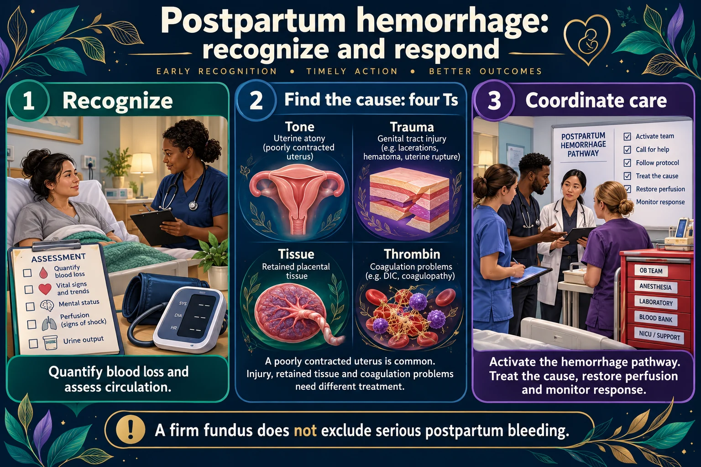

The leading cause of maternal death worldwide. Call for help early, feel the fundus, and work out which of the four Ts is causing it.

Feel the fundus. Boggy means atony — massage it, with the lower segment supported. Firm but still bleeding means the tone is not the problem: look for trauma (a laceration or hematoma), retained tissue or a clotting problem, and more massage will not help.
A firm fundus does not exclude serious postpartum bleeding.
Bleeding recognized
Quantify loss and assess circulation.
Cause assessment
Tone, trauma, tissue and thrombin organize the differential.
Coordinated treatment
Treat the cause while restoring perfusion.
Tone
A poorly contracted uterus is a common cause; assess fundus and bladder.
Other causes
Genital tract injury, retained tissue and coagulation problems need different treatment.
Escalation
Activate the hemorrhage pathway; monitor response and give prescribed therapies promptly.
Blood loss over 500 mL after a vaginal birth, or 1000 mL after a cesarean — or any loss causing signs of hypovolemia.
The uterus stops bleeding by contracting. A uterus that will not contract cannot clamp the vessels where the placenta was.
| Cause | Recognize it by | Fix |
|---|---|---|
| Tone — atony (most common) | Boggy, soft uterus | Massage and uterotonics |
| Trauma — laceration, hematoma | FIRM uterus but still bleeding — a bright red steady trickle; or severe perineal or rectal pain and swelling (hematoma) | Find and repair; a hematoma may need evacuating |
| Tissue — retained placenta | Placenta not intact on inspection; bleeding persists despite treatment | Manual removal, D&C |
| Thrombin — clotting disorder | Oozing everywhere, no clots forming | Blood products |
If the uterus is FIRM and she is still bleeding, it is not atony. Assess for trauma (laceration or hematoma), retained tissue and a clotting problem — a firm fundus does not prove a laceration. More massage will not fix any of them, and that is a favorite exam question.
This is not a ladder. Help is called at the start, and these happen together:
If the bleeding does not stop, prepare for theater and blood products.
A uterus displaced to the RIGHT and sitting above the umbilicus means a full bladder. A distended bladder physically prevents the uterus from contracting down.
Boggy + deviated right = empty the bladder
Boggy and deviated to the right: empty the bladder first (void or catheterize), then reassess and massage if it is still boggy. Boggy in the midline: massage first. Either way, call for help early.
| Drug | Note |
|---|---|
| Oxytocin | First line; IV infusion or IM |
| Methylergonovine | Contraindicated in hypertension — it raises blood pressure |
| Carboprost | Contraindicated in asthma — causes bronchospasm |
| Misoprostol | Can be given rectally; useful when others are contraindicated |
Always check the blood pressure before methylergonovine and ask about asthma before carboprost. Both contraindications are heavily tested.
| Lochia | Days | Color | Abnormal if |
|---|---|---|---|
| Rubra | 1–3 | Dark red | Saturating a pad in under an hour; clots larger than a golf ball |
| Serosa | 4–10 | Pinkish-brown | Returns to bright red |
| Alba | 11–21+ | Creamy white | Foul odor = infection |
Tachycardia comes first. Blood pressure falls late. A young healthy postpartum woman can compensate for a large loss and then crash suddenly.
Do not be reassured by a normal blood pressure in a bleeding postpartum patient. Watch the pulse.